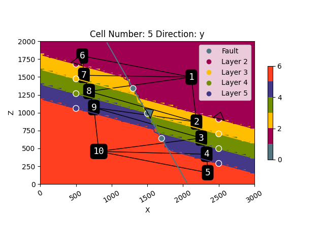
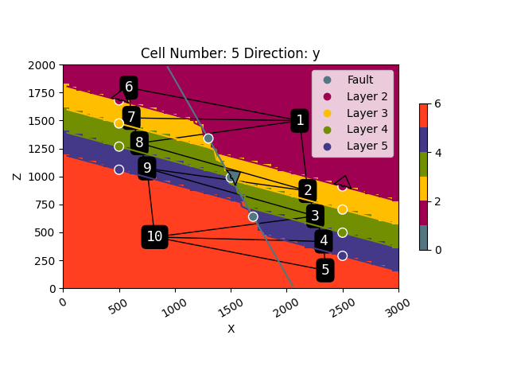

Note
Click here to download the full example code
Chapter 4: Analyzing Geomodel Topology¶
import gempy as gp
from gempy.assets import topology as tp
import numpy as np
import matplotlib.pyplot as plt
import warnings
warnings.filterwarnings("ignore")
Load example Model¶
First let’s set up a very simple example model. For that we initialize the geo_data object with the correct model extent and the resolution we like. Then we load our data points from csv files and set the series and order the formations (stratigraphic pile).
geo_model = gp.create_model("Model_Tutorial6")
data_path = 'https://raw.githubusercontent.com/cgre-aachen/gempy_data/master/'
gp.init_data(
geo_model, [0, 3000, 0, 20, 0, 2000], [50, 10, 67],
path_i=data_path+"data/input_data/tut_chapter6/ch6_data_interf.csv",
path_o=data_path+"data/input_data/tut_chapter6/ch6_data_fol.csv"
)
gp.map_stack_to_surfaces(
geo_model,
{
"fault": "Fault",
"Rest": ('Layer 2', 'Layer 3', 'Layer 4', 'Layer 5')
}
)
geo_model.set_is_fault(["fault"]);
gp.set_interpolator(geo_model)
sol = gp.compute_model(geo_model, compute_mesh=True)
Out:
Active grids: ['regular']
Fault colors changed. If you do not like this behavior, set change_color to False.
Setting kriging parameters to their default values.
Compiling theano function...
Level of Optimization: fast_compile
Device: cpu
Precision: float64
Number of faults: 1
Compilation Done!
Kriging values:
values
range 3605.61
$C_o$ 309533.33
drift equations [3, 3, 3]
gp.plot_2d(geo_model, cell_number=[5])
Out:
<gempy.plot.visualization_2d.Plot2D object at 0x7fcb84e4ff70>
Analyzing Topology¶
GemPy sports in-built functionality to analyze the topology of its models. All we need for this is our geo_data object, lithology block and the fault block. We input those into gp.topology_compute and get several useful outputs:
an adjacency graph G, representing the topological relationships of the model
the centroids of the all the unique topological regions in the model (x,y,z coordinates of their center)
a list of all the unique labels (labels_unique)
two look-up-tables from the lithology id’s to the node labels, and vice versa
The first output of the topology function is the set of edges
representing topology relationships between unique geobodies of the
block model. An edge is represented by a tuple of two int
geobody (or node) labels:
Out:
{(9, 10), (4, 10), (1, 2), (3, 4), (1, 8), (3, 10), (2, 3), (2, 9), (1, 7), (4, 5), (3, 9), (5, 10), (6, 7), (8, 9), (1, 6), (7, 8), (2, 8)}
The second output is the centroids dict, mapping the unique geobody
id’s (graph node id’s) to the geobody centroid position in grid
coordinates:
Out:
{1: array([35.27893175, 4.5 , 50.19485658]), 2: array([36.46666667, 4.5 , 29.14444444]), 3: array([37.59756098, 4.5 , 21.62195122]), 4: array([38.84563758, 4.5 , 14.00671141]), 5: array([39.09550562, 4.5 , 5.37640449]), 6: array([ 9.79081633, 4.5 , 60.10204082]), 7: array([10.17687075, 4.5 , 51.02721088]), 8: array([11.37804878, 4.5 , 43.47560976]), 9: array([12.51098901, 4.5 , 35.90659341]), 10: array([13.659857 , 4.5 , 15.34320735])}
After computing the model topology, we can overlay the topology graph over a model section:
Visualizing topology¶
2-D Visualization of the Topology Graph¶
 

Adjacency Matrix¶
Another way to encode and visualize the geomodel topology is using an adjacency graph:
Out:
[[False True False False False True True True False False]
[ True False True False False False False True True False]
[False True False True False False False False True True]
[False False True False True False False False False True]
[False False False True False False False False False True]
[ True False False False False False True False False False]
[ True False False False False True False True False False]
[ True True False False False False True False True False]
[False True True False False False False True False True]
[False False True True True False False False True False]]

3-D Visualization of the Topology Graph¶
You can also plot the topology in 3-D using GemPy’s 3-D visualization
toolkit powered by pyvista:

Out:
surface
Fault #527682
Layer 2 #9f0052
Layer 3 #ffbe00
Layer 4 #728f02
Layer 5 #443988
basement #ff3f20
Name: color, dtype: object
Look-up tables¶
The topology asset provides several look-up tables to work with the
unique geobody topology id’s.
Mapping node id’s back to lithology / surface id’s:
Out:
{1: 2, 2: 3, 3: 4, 4: 5, 5: 6, 6: 2, 7: 3, 8: 4, 9: 5, 10: 6}
Figuring out which nodes are in which fault block:
Out:
{1: 0, 2: 0, 3: 0, 4: 0, 5: 0, 6: 1, 7: 1, 8: 1, 9: 1, 10: 1}
We can also easily map the lithology id to the corresponding topology id’s:
tp.get_lot_lith_to_node_id(lith_lot)
Out:
{2: [1, 6], 3: [2, 7], 4: [3, 8], 5: [4, 9], 6: [5, 10]}
Detailed node labeling¶
sphinx_gallery_thumbnail_number = 4
dedges, dcentroids = tp.get_detailed_labels(geo_model, edges, centroids)
gp.plot_2d(geo_model, cell_number=[5], show=False)
gp.plot.plot_topology(geo_model, dedges, dcentroids, scale=True)
plt.show()

Out:
{('3_0', '4_0'), ('3_1', '4_1'), ('2_0', '2_1'), ('4_1', '5_1'), ('6_0', '6_1'), ('4_0', '6_1'), ('4_0', '5_1'), ('2_0', '4_1'), ('2_0', '3_1'), ('2_0', '3_0'), ('5_0', '6_1'), ('3_0', '5_1'), ('5_0', '6_0'), ('2_1', '3_1'), ('3_0', '4_1'), ('5_1', '6_1'), ('4_0', '5_0')}
Out:
{'2_0': array([35.27893175, 4.5 , 50.19485658]), '3_0': array([36.46666667, 4.5 , 29.14444444]), '4_0': array([37.59756098, 4.5 , 21.62195122]), '5_0': array([38.84563758, 4.5 , 14.00671141]), '6_0': array([39.09550562, 4.5 , 5.37640449]), '2_1': array([ 9.79081633, 4.5 , 60.10204082]), '3_1': array([10.17687075, 4.5 , 51.02721088]), '4_1': array([11.37804878, 4.5 , 43.47560976]), '5_1': array([12.51098901, 4.5 , 35.90659341]), '6_1': array([13.659857 , 4.5 , 15.34320735])}
Checking adjacency¶
So lets say we want to check if the purple layer (id 5) is connected
across the fault to the yellow layer (id 3). For this we can make easy
use of the detailed labeling and the check_adjacency function:
tp.check_adjacency(dedges, "5_1", "3_0")
Out:
True
We can also check all geobodies that are adjacent to the purple layer (id 5) on the left side of the fault (fault id 1):
tp.get_adjacencies(dedges, "5_1")
Out:
{'6_1', '4_1', '4_0', '3_0'}
Total running time of the script: ( 0 minutes 5.379 seconds)